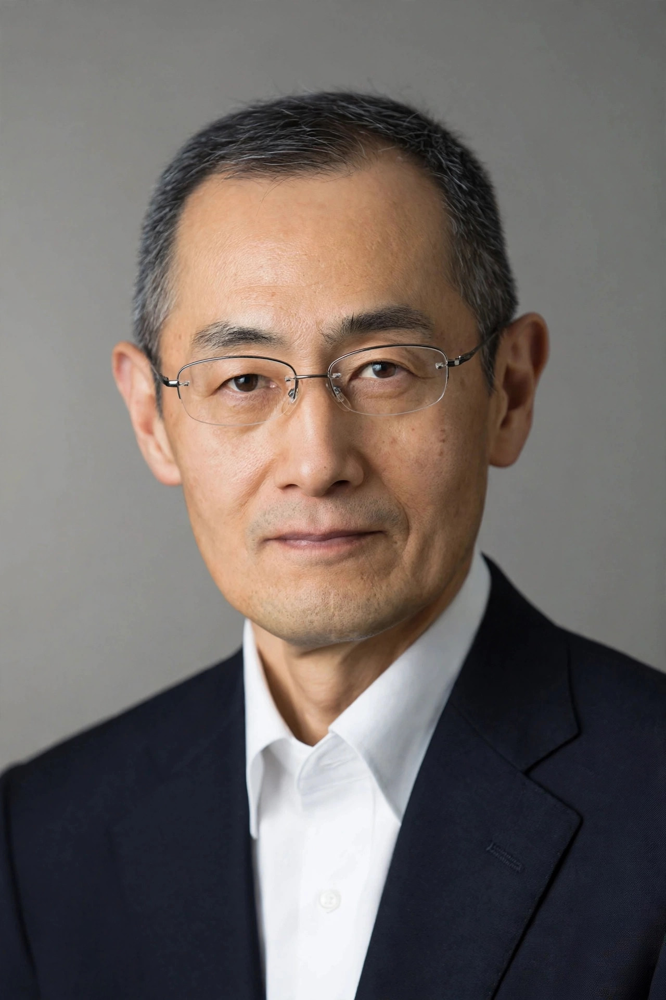

Shinya Yamanaka
| Shinya Yamanaka | |
 | |
| Born | 4 September 1962 Higashiōsaka, Osaka, Japan |
|---|---|
| Nationality | Japanese |
| Alma mater | Kobe University (MD) Osaka City University (PhD) |
| Known for | Induced pluripotent stem cells (iPS cells) |
| Awards | Nobel Prize in Physiology or Medicine (2012) Breakthrough Prize in Life Sciences (2013) |
| Fields | Stem cell research, developmental biology |
| Institutions | Kyoto University, Gladstone Institutes |
Shinya Yamanaka (born 4 September 1962) is a Japanese stem cell researcher and a professor at Kyoto University, where he directs the Center for iPS Cell Research and Application (CiRA). He is best known for discovering that mature, differentiated cells can be reprogrammed back into an embryonic-like pluripotent state, creating what are known as induced pluripotent stem cells (iPS cells). For this work he shared the 2012 Nobel Prize in Physiology or Medicine with John Gurdon.
Early life and education
Yamanaka was born in Higashiōsaka, Japan, where his father ran a small factory making parts for sewing machines. He studied medicine at Kobe University, receiving his MD in 1987, and initially trained as an orthopedic surgeon. Finding clinical surgery difficult, he moved into basic research and earned a PhD from Osaka City University in 1993. He then carried out postdoctoral work at the Gladstone Institutes in San Francisco, studying the role of genes in cholesterol metabolism and embryonic development, before returning to Japan to positions at Osaka City University and the Nara Institute of Science and Technology.
iPS cell discovery
At Kyoto University, Yamanaka's team screened candidate genes expressed in embryonic stem cells to find the minimal set that could revert a differentiated cell to pluripotency. In 2006 they reported that introducing just four transcription factors — Oct3/4, Sox2, Klf4 and c-Myc, now known as the "Yamanaka factors" — into mouse fibroblasts generated induced pluripotent stem cells. In 2007 his group, alongside a team led by James Thomson, achieved the same reprogramming in human cells. Because iPS cells can be made from a patient's own tissue, the technique raised prospects for regenerative medicine and disease modelling while avoiding the ethical controversy surrounding embryonic stem cells.
Later work and honours
Yamanaka founded CiRA in 2010 to advance clinical applications of iPS cell technology, including stock banks of clinical-grade iPS cells for transplantation. He also serves as a senior investigator at the Gladstone Institutes. His honours include the Shaw Prize, the Millennium Technology Prize, the Albert Lasker Award for Basic Medical Research, and the Breakthrough Prize. An accomplished long-distance runner, he has completed marathons in support of research funding.
See also: Induced pluripotent stem cell · Stem cell · John Gurdon